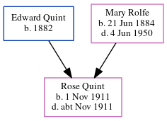

Charles David Quint cAug 1916 - c1916
[ Home ] | [ Calendar ] | [ Surnames Index ] | [ Errors ] | [ Family History ]The child of Edward Quint (a harbourman) and Mary Rolfe (a domestic general servant), Charles Quint, the third cousin once-removed on the father's side of Nigel Horne, was born in Dover, Kent, England c. Aug 19161,2,3.
He died c. Oct 1916 in Dover2 and was buried at St Andrew's Church, Buckland, Kent, England on 25 Oct 19164.
Parents
- Edward Seagar was born in 1882
- Mary Jane was born on 21 Jun 1884
Citations
- England & Wales births 1837-2006 - Findmypast
- England & Wales deaths 1837-2007 - Findmypast
- Kent Burials - Findmypast
- Kent Burials - Findmypast
Media
Kent, Canterbury Archdeaconry Burials - GBPRS-CANT-D-95393461
England & Wales births 1837-2006 - BMD/B/1916/3/AZ/001160/005
England & Wales deaths 1837-2007 - BMD/D/1916/4/AZ/000854/045
Family Tree
Map
Generated by ged2site. Last updated on Jul 3, 2024